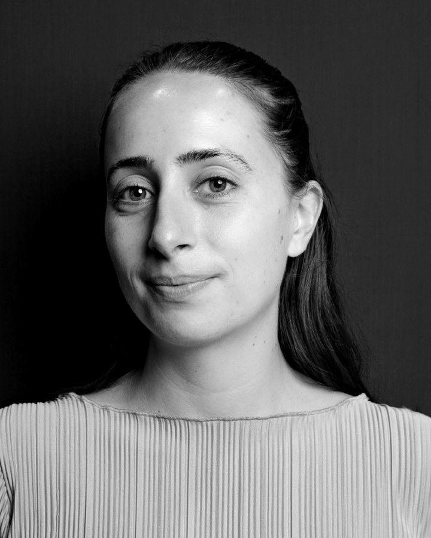
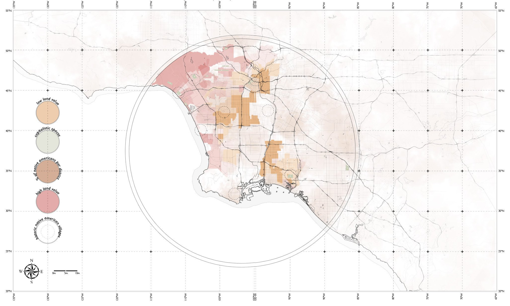
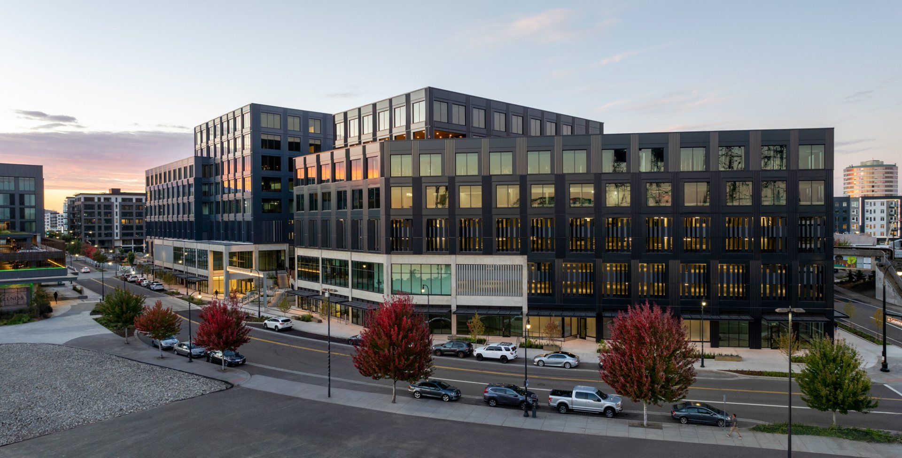
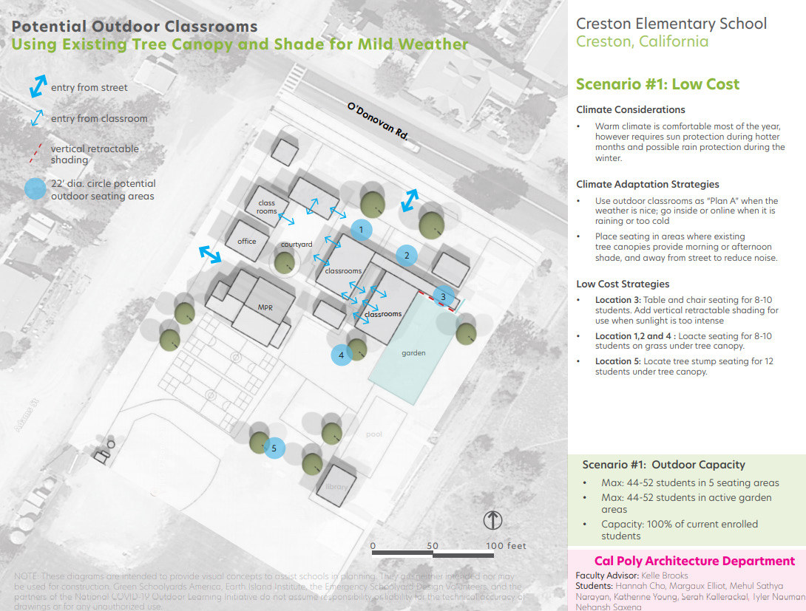

Katherine Young
Katherine Young is a Research Associate and doctoral researcher at the Institute of Building Structures and Structural Design (ITKE) at the University of Stuttgart. Her doctorate is part of the DFG Research Training Group BioBuild (GRK 3123), a partnership between the University of Stuttgart and the University of Freiburg, and is an associated project of the Cluster of Excellence IntCDC. She develops methods to assess the environmental performance of bio-inspired, responsive facades, combining life cycle assessment with daylight and energy simulation so that material and design decisions are grounded in evidence from the earliest stages.
Her background spans architectural and construction practice in Florida, Illinois and Oregon, including two years at DLR Group, and life cycle assessment in the R&D department of Henning Larsen in Copenhagen. She holds a Bachelor of Architecture from California Polytechnic State University, San Luis Obispo, and an MSc in Building Architecture from Politecnico di Milano, graduating with 110 cum laude, the highest mark awarded, and supports teaching in the ITECH master's programme at the University of Stuttgart.

Selected work
FlectoLine LCA
2026–Research · Two material variants of one compliant shading fin, compared cradle to cradle.

Risonanza del Suolo
2024–26Academic · Master's thesis: a house of music carved into the ground at Rogoredo, Milan.
Sustainability Studies, Henning Larsen
2025–26Practice · Life cycle assessment and material research in the R&D department.

Porta Romana
2024Academic · A mixed-use tower and podium with a photovoltaic double facade.

Cinifabrique
2023Academic · Extending an existing building into a place for making, learning and working.

The Indigenous Paragon
2020–21Academic · Bachelor thesis: architecture and urban Native American identity in Los Angeles.

Rural Futures
2020Academic · An agritourism site near Florence where people and farming robots meet.

Port of Vancouver, Terminal 1 and Block 2
2021–23Practice · Mixed-use office and residential buildings on the Columbia River waterfront.

Pritchard and O'Brien Buildings
2022–23Practice · Renovating a 1950s library and adding a new building on the Washington State Legislative Campus.

Outdoor learning spaces
2020Research · Research Assistant for the National COVID-19 Outdoor Learning Initiative.
Smaller projects, installations and community work